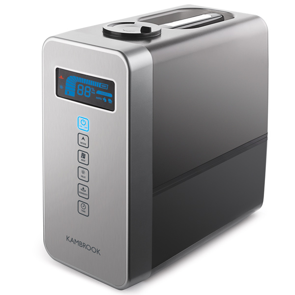
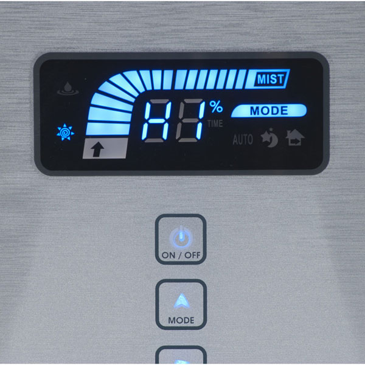
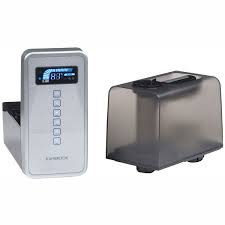
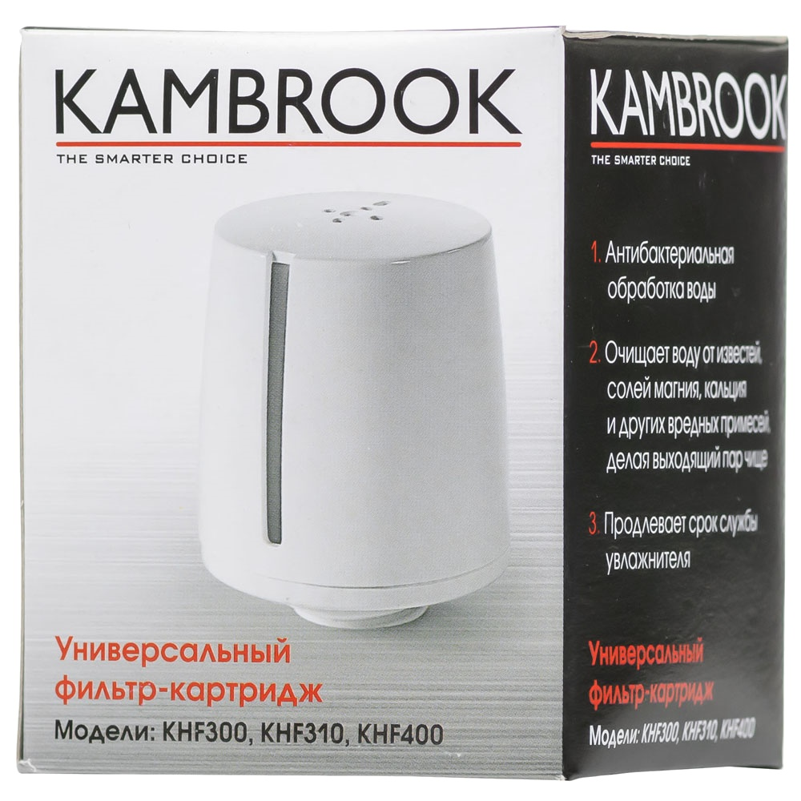
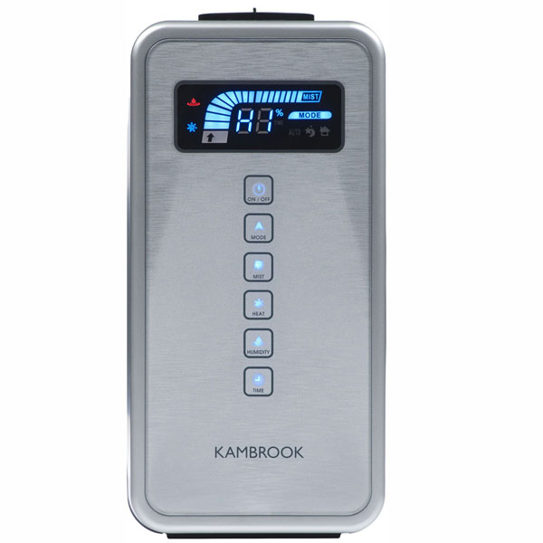

Увлажнитель воздуха Kambrook KHF400
Воздухоувлажнитель Kambrook KHF400 оснащён универсальным фильтром. Он не только очищает воду от твёрдых частиц и избыточного количества солей, но и уничтожает вредоносные микроорганизмы, защищая людей от опасных заболеваний.
Универсальное применение
Режим Turbo позволяет очень быстро достичь комфортных условий - он очень полезен при работе системы централизованного отопления. Функция Away From Home ограничивает производительность устройства, снижая уровень энергопотребления.
Удобство использования
Прибор способен работать в автоматическом режиме - при этом он самостоятельно подбирает оптимальные параметры, помогающие сделать обстановку в помещении максимально комфортабельной.
Быстрая настройка
Сенсорные клавиши в сочетании с крупным дисплеем дают пользователю возможность устанавливать требуемые параметры за считанные секунды.
Максимальная безопасность
Воздухоувлажнитель автоматически отключается при отсутствии воды в баке, что позволяет избежать повреждения мембраны.
Идеальная чистота
В комплект поставки входит картридж для смягчения воды. Он защищает устройство от образования отложений, а также предотвращает появление белого налёта на стенах и мебели.
Автоматический режим
При выборе режима автоматически устанавливается:
- время работы — (CO) непрерывное парообразование;
- значение уровня влажности — 60 %.
Производительность увлажнения зависит от уровня текущей влажности:
- влажность 60 % (50~60 %) — минимальный уровень;
- влажность 55 % (51~55 %) — средний уровень;
- влажность 50 % (менее 50 %) — максимальный уровень.
Увлажнение будет остановлено, если текущая влажность превысит 65 %.
Ночной режим
Время работы — 8 часов. Значение уровня влажности — 60 %.
Производительность увлажнения устанавливается в той же зависимости, что и в автоматическом режиме. Дисплей переключатся в экономный / затемненный режим.
Режим удаленной работы
Время работы — 24 часа. Значение уровня влажности — 60 %.
Производительность увлажнения — минимальный уровень. Увлажнение будет остановлено, если текущая влажность превысит 65 %.
Общие характеристики
- Тип увлажнителя: ультразвуковой
- Емкость бака для воды: 5 л
- Тип управления: сенсорное
- Цвет: серебристый
- Вес: 3.2 кг
Технические характеристики
- Обслуживаемая площадь: 25 кв.м
- Производительность: до 0.5 л/ч
- Количество режимов работы: 1
Тестирование
Согласно внутренним правилам Kambrook, увлажнитель воздуха KNF300 беспрерывно тестировался более 5000 часов. Этого достаточно для использования увлажнителя в течение 2 лет для поддержания комфортного уровня влажности.